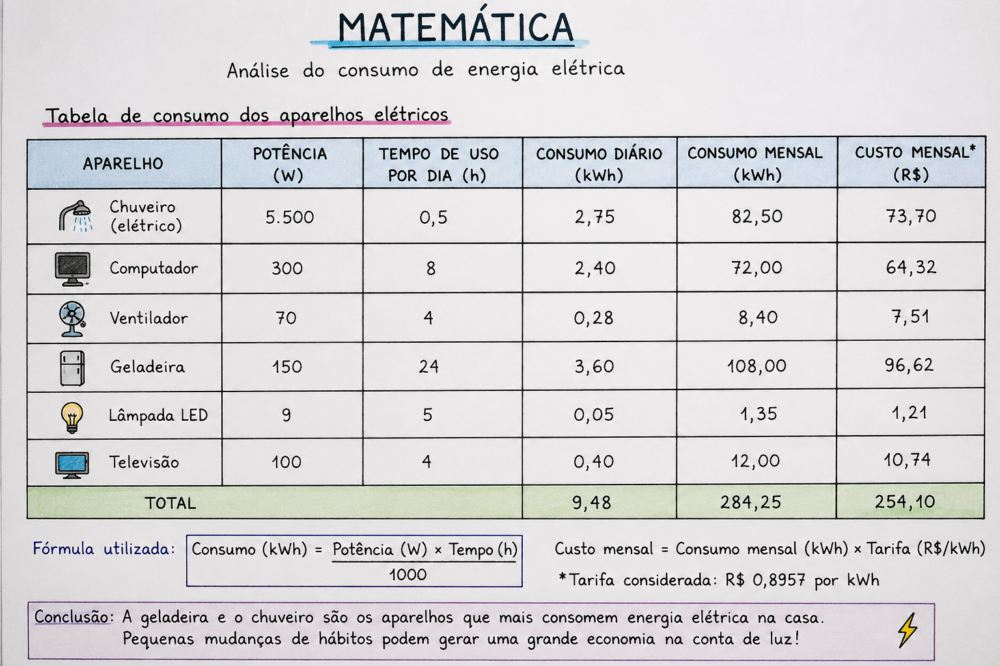

Análise da Conta de Energia
A energia elétrica é uma das principais despesas de uma residência. Por isso, foi realizada uma análise da conta de luz para compreender melhor os gastos e a importância da organização financeira.
Através dos cálculos foi possível identificar quais aparelhos consomem mais energia e quais atitudes podem ajudar na economia.

Tabela de Consumo
| Aparelho | Potência | Horas por Dia | Consumo Mensal |
|---|---|---|---|
| Chuveiro | 5500 W | 0,5 h | 82,5 kWh |
| Computador | 300 W | 8 h | 72 kWh |
| Ventilador | 70 W | 4 h | 8,4 kWh |
| Geladeira | 150 W | 24 h | 108 kWh |
A análise demonstrou que controlar o consumo de energia é uma excelente forma de economizar dinheiro e melhorar o planejamento financeiro familiar.